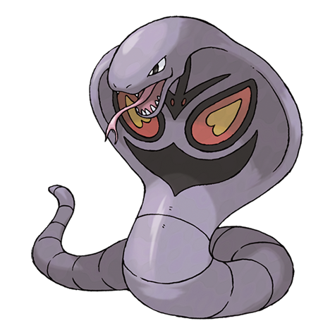
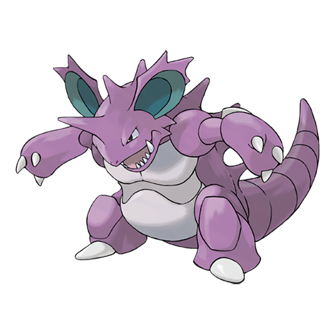
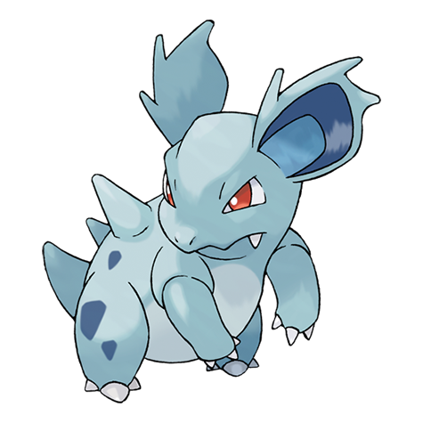
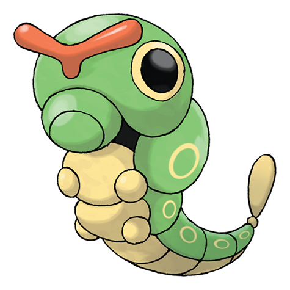

Mewtwo
Tipo: Psíquico puro
Mewtwo es un Pokémon Legendario artificial de tipo Psíquico introducido en la primera generación. Creado en un laboratorio por científicos, su propósito fue convertirse en el arma definitiva. Destaca por su inteligencia superior y sus devastadores ataques mentales.

Pikachu
Tipo: Eléctrico
Pikachu es un Pokémon de tipo Eléctrico. Físicamente está inspirado en un roedor, es de color amarillo brillante con franjas marrones en la espalda y mejillas rojas donde almacena energía. Es la mascota oficial de toda la franquicia y el inseparable compañero de Ash Ketchum en el anime.

Squirtle
Tipo: Agua
Squirtle es un Pokémon de tipo Agua introducido en la primera generación. Es una pequeña tortuga bípeda de color azul con un caparazón marrón y una cola en espiral.

Bulbasaur
Tipo: Planta y Veneno
Bulbasaur es un Pokémon de tipo Planta y Veneno. Es uno de los tres Pokémon iniciales de la región de Kanto y destaca por ser el primero en la Pokédex Nacional.

Vulpix
Tipo: Fuego
Vulpix es un Pokémon de tipo Fuego (con una variante regional tipo Hielo en la región de Alola). Su nombre proviene de la combinación de zorro ("vulpes") y seis ("six"), haciendo alusión a sus características seis colas.

Sandslash
Tipo: Tierra
Sandslash es un Pokémon de tipo Tierra (y cuenta con una forma regional de Hielo/Acero en Alola). Físicamente se asemeja a un pangolín o armadillo y destaca por sus afiladas púas y poderosas garras.

Arbok
Tipo: Veneno
Arbok es un Pokémon de tipo Veneno introducido en la primera generación, conocido por ser la evolución de Ekans. Físicamente, está basado en una cobra corpulenta y se caracteriza por las aterradoras marcas con forma de rostro que tiene en su vientre, las cuales utiliza para intimidar a sus enemigos.

Nidoking
Tipo: Veneno y Tierra
Nidoking es un Pokémon de tipo Veneno y Tierra. En los combates, destaca por ser un atacante versátil capaz de usar movimientos físicos o especiales muy variados. Suele usar su poderosa cola para aplastar enemigos y su cuerno, capaz de pulverizar diamantes.

Rattata
Tipo: Normal
Rattata es un Pokémon de tipo Normal (y también de tipo Siniestro/Normal en su forma de Alola). Es un roedor pequeño y muy adaptable que se encuentra comúnmente al inicio de los juegos.

Ninetales
Tipo: Fuego
Ninetales es un Pokémon Zorro de la primera generación que evoluciona de Vulpix al exponerse a una Piedra Fuego. Tiene dos versiones: la forma clásica y la forma de Alola.

Nidorina
Tipo: Veneno
Nidorina es un Pokémon de tipo Veneno introducido en la primera generación. Es conocido como el Pokémon Pin Venenoso y es la evolución de Nidoran

Spearow
Tipo: Normal y Volador
Spearow es un Pokémon de tipo Normal y Volador introducido en la primera generación. Es un ave pequeña y territorial, conocida por su fuerte temperamento.

Beedrill
Tipo: Bicho y Veneno
Beedrill es un Pokémon de tipo Bicho y Veneno introducido en la primera generación. Basado en una avispa gigante, es extremadamente agresivo, territorial y destaca por atacar en enjambres usando los tres aguijones venenosos (en sus patas delanteras y cola) para perforar a sus enemigos.

Butterfree
Tipo: Bicho y Volador
Butterfree es un Pokémon de tipo Bicho y Volador introducido en la primera generación. Evoluciona de Metapod y es la fase final de Caterpie.

Butterfree
Tipo: Bicho
Caterpie es un Pokémon de tipo Bicho introducido en la primera generación. Su función principal en el juego es enseñar al entrenador los conceptos de la evolución, ya que evoluciona muy rápido.

Weedle
Tipo: Bicho y Veneno
Weedle es un Pokémon de tipo Bicho y Veneno. Introducido en la primera generación, se le conoce como el Pokémon Oruga. En los juegos, utiliza sus habilidades defensivas para camuflarse en hojas y arbustos, y emplea el aguijón venenoso en su cabeza para defenderse de los depredadores.